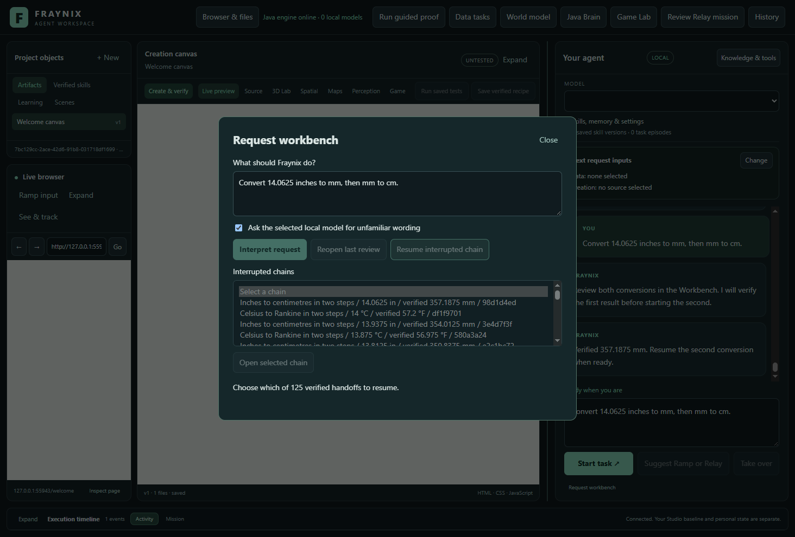
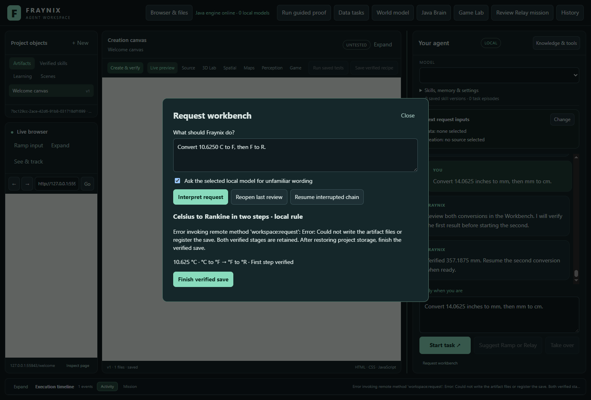
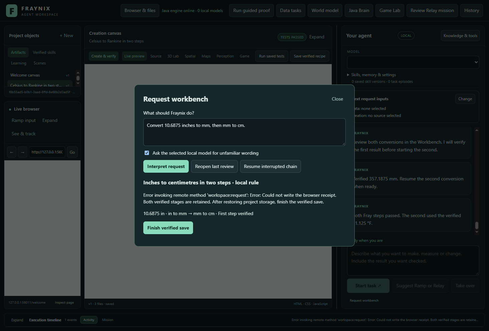

Recover failed disk writes with a near-capacity Fray bank
The Workbench can retry a verified Fray save after project storage rejects an artifact or browser receipt write. Java uses the original review, evidence and artifact ID to finish the save.

125 verified pending chains in the Workbench

Recovery action after the artifact destination rejects a write

Recovery action after the browser receipt destination rejects a write
System files
Open source